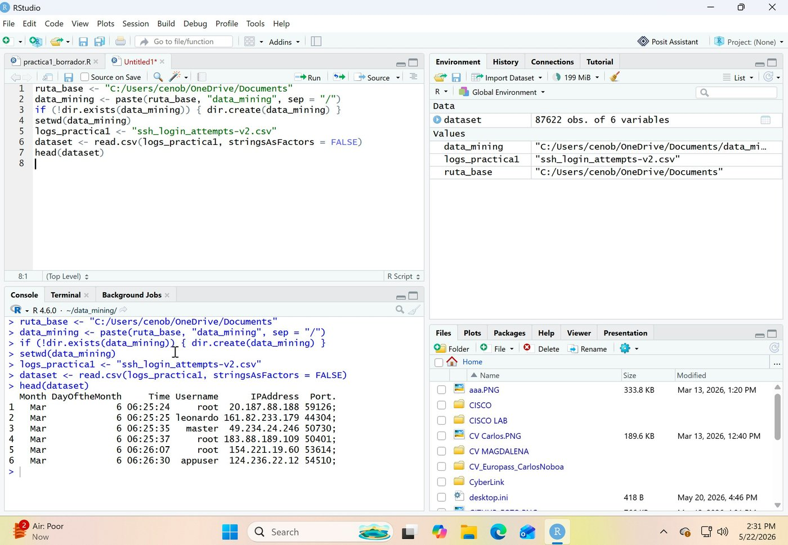
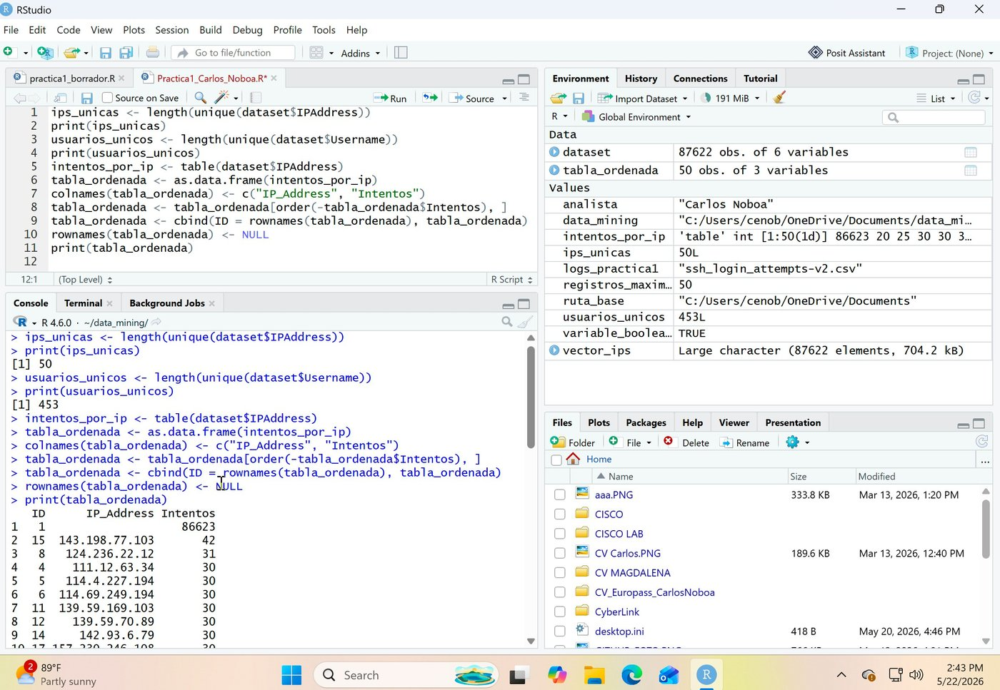

El punto de partida
Un script que se prepara solo antes de analizar nada
Antes de examinar un solo dato, el script hace algo que parece menor pero no lo es: comprueba si existe, en el computador, la carpeta de trabajo que necesita, y la crea automáticamente si no está. Ese detalle es lo que permite que el mismo script se pueda ejecutar de nuevo, en otro momento o en otro equipo, sin que nadie tenga que preparar nada a mano de antemano.
Con esa base lista, el script carga el archivo completo de registros de acceso —87.622 líneas— en cuestión de segundos.

Para qué sirve esto en una empresa
Un análisis que solo funciona porque alguien preparó una carpeta a mano de antemano no está realmente automatizado, solo lo parece la primera vez. Que el propio script se encargue de esa preparación es lo que permite que un compañero lo retome y lo vuelva a ejecutar sin tener que preguntar nada.
Paso 1
Contar cuántos atacantes distintos hay, antes de mirar nada más
Con el archivo ya cargado, la primera pregunta que se le hizo a los datos fue la más básica: de las 87.622 líneas registradas, ¿cuántas direcciones de origen distintas aparecen, y cuántos nombres de usuario distintos se intentaron? Ese conteo inicial ya dice algo importante sobre la naturaleza del problema: no es lo mismo un puñado de orígenes insistiendo mucho que centenares de nombres de usuario distintos siendo probados al azar.

Para qué sirve esto en una empresa
Ese primer conteo, por sí solo, ya sirve para dimensionar el tamaño de un posible incidente: cuántos orígenes distintos hay que investigar y cuántas cuentas pudieron verse expuestas, antes de invertir tiempo en analizar cada intento uno por uno.
Paso 2
Convertir un conteo desordenado en una lista de prioridades
Un conteo en el orden en que sale del programa no sirve para decidir nada. El script reorganizó esas 50 direcciones en una tabla ordenada de mayor a menor número de intentos, con una columna de identificación limpia, lista para leerse como un informe y no como una salida de programación en bruto. En esa tabla ya ordenada aparece un dato que llama la atención de inmediato: el primer resultado concentra 86.623 de los 87.622 intentos totales del archivo —prácticamente la totalidad del registro—, mientras que el resto de direcciones se reparte entre 20 y 42 intentos cada una.
Para qué sirve esto en una empresa
Esta es, en esencia, la lista de prioridades que usaría cualquier equipo de seguridad para decidir qué dirección bloquear o investigar primero, generada automáticamente en lugar de construida a mano revisando miles de líneas.
En resumen
Qué más incluye el ejercicio
El resto del script son ejercicios de práctica sobre las mismas herramientas de R —filtrar tablas por condiciones, trabajar con listas de datos mixtos, construir funciones propias reutilizables— resueltos sobre datos de ejemplo sin relación con el archivo de accesos SSH, pensados para dominar las piezas básicas del lenguaje antes de aplicarlas a un caso real como el de este análisis.
87.622 intentos analizados · 50 direcciones de origen distintas · 453 nombres de usuario distintos